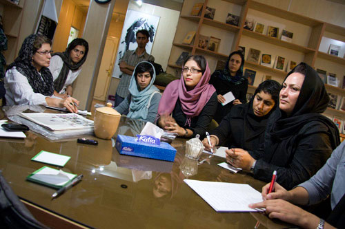
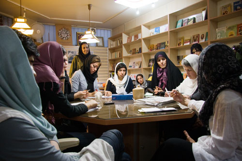
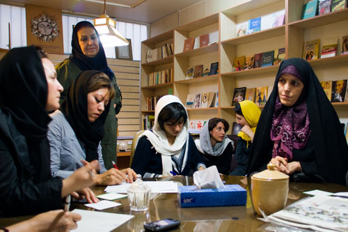
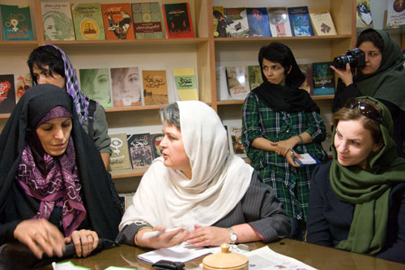
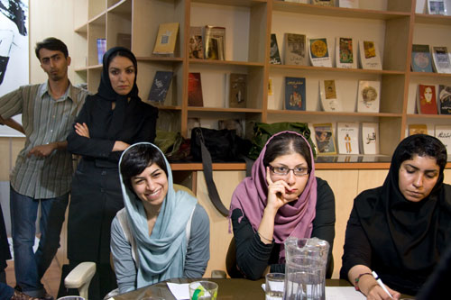

پذيرش > اخبار > گردهمایی جمعی از فعالان جنبش زنان در اعتراض به ترویج چندهمسری


 گردهمایی جمعی از فعالان جنبش زنان در اعتراض به ترویج چندهمسری گردهمایی جمعی از فعالان جنبش زنان در اعتراض به ترویج چندهمسری
10 مهر 1389 - - نسخه قابل چاپ
سه شنبه ششم مهرماه 1389، نشستی با حضور جمعي از فعالان جنبش زنان، در اعتراض به ترویج چندهمسری در قالب لایحه حمایت از خانواد برگزار شد. در این نشست که مدافعان حقوق زنان از طیف های مختلف حضور داشتند، در مورد فرایند تصویب لایحه حمایت از خانواده، و مواد مربوط به تعدد زوجات در این لایحه، بحث و تبادل نظر صورت گرفت. کنشگران حاضر در این جلسه، ضمن ابراز نگراني نسبت به عواقب تصويب ماده 23، مخالفت صریح خود را با ترویج چندهمسری عنوان داشتند، و تاکید کردند که با بهره گیری از شیوه های مدنی به اعتراض علیه تصویب ماده 23 ادامه دهند. شایان ذکر است، این نشست در حالی برگزار شد که در ابتدای هفته، یعنی چهارم مهرماه جمعی از فعالان جنبش زنان 5 هزار بیانیه امضاء شده در مخالفت با چندهمسري را به کمیسیون حقوقی و قضایی مجلس ارائه دادند و خواستار ممنوعیت چندهمسری به جای ترویج و تثبیت آن شدند.

در ابتدای این نشست، خديجه مقدم، فعال حقوق زنان و از مادران كمپين یک میلیون امضاء، گزارشي از ارائه بیش از پنج هزار نامه اعتراضی به نمایندگان مجلس ارائه داد: «همه ما مي خواهيم چند همسري دائم يا موقت ممنوع شود. مي دانيم كه دوستان ديگر هم دارند تلاش هاي خود را مي كنند، اما مي توانيم در همين راستا مجموعه فعاليت هايي را به طور هماهنگ از سوي همه گروه هاي زنان انجام دهيم. ما هم به زعم خود تلاش كرديم تا بيانيه اي را تنظيم و مسئله را در ميان عموم مردم طرح كنيم. پس از جمع آوري بيش از 5 هزار امضاء در طول يك هفته اين امضاها را روز يكشنبه به مجلس برديم. پس از ثبت امضاءها در دفتر آقاي لاريجاني از كميسيون قضائي مجلس وقت ملاقات گرفتيم تا نظرات عموم مردم را به سمع و نظر آنها هم برسانيم. در اين ملاقات با آقاي شاهرخي و غضنفرآبادي و خانم الهيان، از اعضای كميسيون صحبت كردیم. جالب است که خانم الهيان به من گفتند "من صد در صد مخالف تعدد زوجات هستم و گفتند بگذاريد اين امضاء ها در كميسيون باشد تا بدانند مردم مخالف اين لايحه اند"، به گفته ايشان نظر رهبري هم بر تك همسري است».

شهیندخت مولاوردي، از اعضای مجمع زنان اصلاح طلب و ائتلاف اسلامي زنان، نيز در مورد اقدامات ائتلاف اسلامي زنان گزارش مختصري ارائه داد: «قرار بوده سه شنبه 6 مهر جلسه كميسيون با حضور آقاي لاريجاني برگزار شود و خانم بهروزي هم از ائتلاف براي ارائه پيشنهادات ما شركت كنند. اما گويا اين جلسه به تعويق افتاده است. ولي پيشنهادات براي اعضاي كميسيون ارسال شده است. احتمالاً طي اين جلسه كميسيون مي خواهد آخرين اصلاحات را انجام بدهد و لايحه را در جلسه علني آينده مجلس طرح كند. اصرار ما به حذف ماده 23 با برگشت به قانون خانواده 1353 است. در واقع، نظر ائتلاف اسلامي زنان اين است كه وضع موجود همانطور دست نخورده باقي بماند و ما به شرايط سال 1353 باز گرديم».

در ادامه، مينو مرتاضي لنگرودی، از مادران صلح و فعال حقوق زنان، اظهار داشت: «موضوع چندهمسري به دليل عوارض آن در جامعه از چند منظر قابل بررسي است. از زاويه نگاه دولت، دولت خواسته بار مسئوليتي را كه براي تأمين شغل و كاهش معضل طلاق دارد را از دوش خود بردارد. از سوي ديگر نگاه سنتي در موضوع چند همسري را داريم كه به نوعي حكومت مي خواهد آن را تقويت كند. اما دولت دچار سوء مديريت است و نمي تواند مسائل اجتماعي را حل و فصل كند، اما انگار با اين لايحه مي خواهد نوعي بازي را در پيش بگيرد تا زنان يا جامعه را دلمشغول اين موضوع نگاه دارد. در حالي كه از زاويه ديد مردم نوعي بي اعتنايي عمدي نسبت به اين موضوع وجود دارد. گويي كه مردم فكر مي كنند اين مسئله، مسئله آنها نيست. زاويه ديگر، نگاه فعالان جنبش زنان است. كه به نظر من اين لايحه نقطه مثبتي است به اين دليل كه منجر به ايجاد نوعي وحدت نظري و عملي در ميان همه گروه هاي زنان شده است. از اين ائتلاف به وجود آمده استفاده كنيم تا مطالبات كلان و گسترده تر زنان را با عمق بيشتري مطرح كنيم. چند همسري فقط يك موضوع حقوقي نيست بلكه همانند ساير مسائل ديگر زنان با همه مسائل اجتماعي مرتبط است. اشتغال زنان، فحشاء، اعتياد و بيشتر از همه نابرابری».

همچنین، شهلا لاهیجی، مدير انتشارات روشنگران و مطالعات زنان، با یادآوری تجربه ای اظهار داشت: «يكي از كارهايي كه ما در مجلس پنجم انجام داديم، استيضاح وكلاي زن مجلس بود. ما كانديداها را دعوت كرديم و گفتيم كه حق تبليغ براي خودشان را ندارند به اين دليل كه قوانيني را عليه زنان به تصويب رسانيدند. امروز هم، نمايندگاني كه اين قوانين را تهيه، توجيه يا تشويق كنند و به تصويب آن بپردازند، بايد بدانند كه ديگر حمايت مردم را نخواهند داشت. ما باید به طور علني از اين كه زنان نماينده اجازه مي دهند چنين قوانيني تصويب شود، ابراز تاسف کنیم. ما بايد مثل دوره پنجم مجلس آنها را مورد مواخذه قرار دهيم. نه تنها در اين مورد كه در همه موارد قوانين تبعيض آميز».
در ادامه این نشست، بحث هایی در مورد راهکارهای مدنی و مسالمت آمیز اعتراض به ترویج چندهمسری مطرح شد. در این رابطه، ستاره هاشمي، از فعالان كمپين یک میلیون امضاء اظهار داشت: «ممكن است درصد كمي از خانواده هاي ايراني درگير تعدد زوجات باشند، اما حساسيت اغلب زنان به اين مسئله بالاست. ما اين موضوع را در جريان جمع آوري امضاء به وضوح شاهد بوديم. يعني واكنش سريع زنان نشان مي دهد كه اين مسئله دغدغه آنهاست. بنابراين به نظر من واكنش فعالان زن نسبت به اين موضوع بايد قاطع باشد».

همچنین، ساناز ساناز الله بداشتي
، خبرنگار حوزه زنان، افزود: «لايحه حمايت از خانواده فضايي را به وجود آورد كه طي آن افراد عادي هم خواهان ملاقات با نمايندگان براي جلوگيري از تصويب اين قانون بودند و شاهد بوديم كه اين فشارها تا حدي مي تواند تأثيرگذار باشد. چنان كه آقاي لاريجاني دوباره لايحه را براي بررسي بيشتر به كميسيون حقوقي و قضائي مجلس برگرداند. بنابراين به نظرم از اين ابزار، مثبت استفاده كنيم و به طرح مطالبات كلي زنان بپردازيم». آمنه شيرافكن از دیگر خبرنگاران حوزه زنان نیز با اشاره به طولانی شدن روند بررسی لایحه حمایت از خانواده و در حاشیه قرار گرفتن سایر مسائل اظهار داشت: «ساير موضوعات نيز مهم اند، مثل تفكيك جنسيتي يا بومي گزيني جنسیتی در دانشگاه ها و... بنابراين با تاكيد بر در خبر نگه داشتن بحث لايحه، نبايد خبرهاي ديگر مربوط به زنان را فراموش کرد و به سادگي از كنار آنها عبور كرد».
سرانجام، در پایان این نشست بر تدوام اعتراضات به ترویج چندهمسری تاکید شد، و جمع آوری تعداد بیشتری امضاء در مخالفت با تصویب مواد مربوط به چندهمسری برای ارائه به نمایندگان مجلس مورد توافق قرار گرفت.
ارسال به
بالاترین
،
توییتر
،
فریندفید
،
فیسبوک
در همين بخش :
 پروین ذبیحی برنده جایزه حقوق بشری سازمان غيردولتى اتريشى سودويند شد پروین ذبیحی برنده جایزه حقوق بشری سازمان غيردولتى اتريشى سودويند شد
پخش کارت پستال و بروشور در روز جهانی زن در تهران
تمدید زمان برای امضای بیانیهی جمعی از فعالان زن به مناسبت هشت مارس
مجوزی که در نطفه خفه شد
بیش از 2000 امضا در اعتراض به تبعیض های آموزشی به مجلس تحویل داده شد
ديگر بخش ها :
طرح یک میلیون امضا
|
مقالات
|
سایت نوشته ها
|
اخبار
|
گزارش كمپين
|
گفت و گو
|
علیه سکوت
|
كوچه به كوچه
|
نامه های شما
|
گزارش ویژه
|
گفتگو با اعضا
|
ویژه سالگرد کمپین
|
تصویر برابری
|
دل آرام علی
|
تریبون
|
مقالات
|
تاریخ شفاهی
|
خارج از چارچوب
|
کتابخانه
|
درباره کمپین
|
کمپین در شهرها
|
کمپین در بند
|
صدای تغییر
|
ویژه 22 خرداد
|
لایحه حمایت از خانواده
|
گالری
|
عشا مومنی
|
امیر یعقوبعلی
|
خدیجه مقدم
|
راحله عسگری زاده و نسیم خسروی
|
پروین اردلان،جلوه جواهری، مریم حسین خواه، ناهید کشاورز
|
زینب پیغمبرزاده
|
سعیده امین، سارا ایمانیان، محبوبه حسین زاده، ناهید کشاورز و همایون نامی
|
احترام شادفر
|
نسیم سرابندی زاده،فاطمه دهدشتی
|
وبلاگ مهمان
|
پرونده خرم آباد
|
دستگیری ها
|
مریم مالک
|
پرستو اللهیاری
|
مهرنوش اعتمادی
|
سمیه رشیدی
|
Other Languages
|
همراهان
|
«فراخوان کمپین ده روز با بهاره هدایت»
| English
|